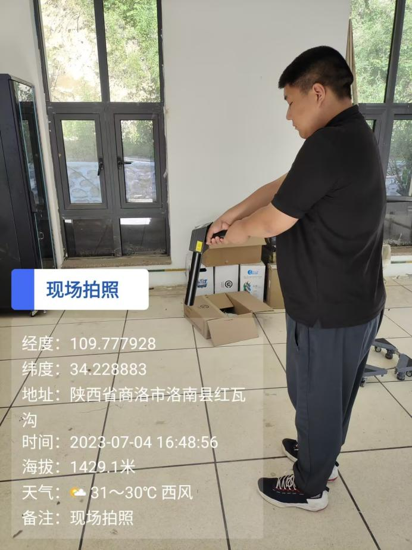
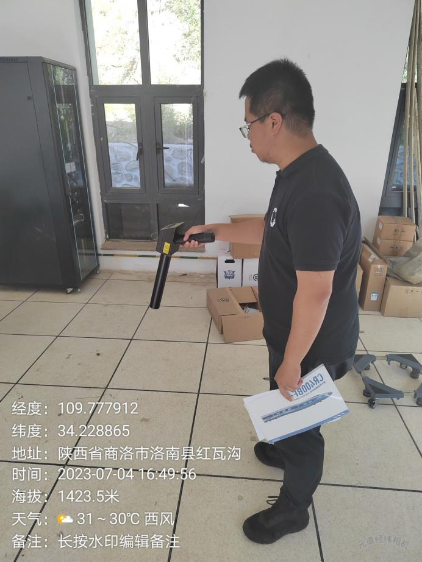

检 测 报 告
QNJC-2025-0293-FH
项目名称： | 西安近代化学研究所4303实验室 辐射环境现状检测 |
委托单位： | 北京北方节能环保有限公司 |
检测性质： | 委托检测 |
报告日期： | 2023年8月1日 |
陕西秦洲核与辐射安全技术有限公司
（检验检测专用章）
检 测 报 告
QNJC-2025-0293-FH
项目名称： | 西安近代化学研究所4303实验室 辐射环境现状检测 |
委托单位： | 北京北方节能环保有限公司 |
检测性质： | 委托检测 |
报告日期： | 2023年8月1日 |
陕西秦洲核与辐射安全技术有限公司
（检验检测专用章）
报告说明
1.本报告适用于陕西秦洲核与辐射安全技术有限公司电离辐射、电磁辐射等项目的检测报告。
2.本报告无陕西秦洲核与辐射安全技术有限公司“检验检测专用章”、无骑缝章、无章、无编制人、审核人、签发人签字无效。
3.现场检测，检测结果仅对当次检测时工况负责，委托方需对自己提供的工况等信息负责。
4.如委托单位对本报告检测数据有异议，应于收到本报告之日起十五日内向本公司提出书面申诉，逾期则视为认可检测结果。
5.本报告全部或部分复制，私自转让、盗用、冒用、涂改或以其他任何形式篡改的均属无效。
6.未经我公司同意，本报告不得用于委托范围之外的其他商业用途。
7.*为分包检测结果。
名 称：陕西秦洲核与辐射安全技术有限公司
地 址：陕西省西咸新区沣西新城中国西部科技创新港创科大厦12层
电 话：029-89586445
传 真：029-89586445
网 址：www.qznrs.net
邮政编码：712046

项目名称 | 西安近代化学研究所4303实验室辐射环境现状检测 | 西安近代化学研究所4303实验室辐射环境现状检测 | 西安近代化学研究所4303实验室辐射环境现状检测 | ||||||
委托单位 | 北京北方节能环保有限公司 | 北京北方节能环保有限公司 | 北京北方节能环保有限公司 | ||||||
检测地点 | 陕西省商洛市洛南县洛源镇红瓦沟 | 陕西省商洛市洛南县洛源镇红瓦沟 | 陕西省商洛市洛南县洛源镇红瓦沟 | ||||||
联系人 | 郑珍雯 | 联系电话 | 178 0102 4563 | ||||||
检测类别 | 电离辐射 | 委托编号 | QNJC-202307-E045 | ||||||
检测因子 | γ辐射剂量率 | 检测日期 | 2023年7月4日 | ||||||
检测依据 | 《辐射环境监测技术规范》（HJ 61-2021） 《环境γ辐射剂量率测量技术规范》（HJ 1157-2021） | 《辐射环境监测技术规范》（HJ 61-2021） 《环境γ辐射剂量率测量技术规范》（HJ 1157-2021） | 《辐射环境监测技术规范》（HJ 61-2021） 《环境γ辐射剂量率测量技术规范》（HJ 1157-2021） | ||||||
检测结果 | 检测结果详见表2 | 检测结果详见表2 | 检测结果详见表2 | ||||||
附件 | 现场检测照片 | 现场检测照片 | 现场检测照片 | ||||||
备注 | / | / | / | ||||||
一、检测仪器
表1 检测仪器基本信息
仪器名称 | 仪器型号 | 仪器编号 | 测量范围 | 溯源单位/证书编号 | 有效期至 |
辐射防护用X、γ辐射周围剂量当量率仪 | RJ38-3602 | QNJC-YQ-034 | （0.01~600.00）μSv/h | 中国辐射防护研究院放射性计量站/校字第[2022]-LA067 | 2023.07.06 |
二、检测结果
表2 辐射环境检测结果
序号 | 检测点位描述 | γ辐射空气吸收剂量率（μGy/h） | γ辐射空气吸收剂量率（μGy/h） | ||||||||||||
序号 | 检测点位描述 | 平均值 | 标准差 | ||||||||||||
1 | 4304实验室测试间 1# | 0.11 | 0.01 | ||||||||||||
2 | 4304实验室测试间 2# | 0.12 | 0.01 | ||||||||||||
3 | 4304实验室测试间 3# | 0.10 | 0.01 | ||||||||||||
4 | 4304实验室测试间 4# | 0.13 | 0.01 | ||||||||||||
5 | 4304实验室测试间 5# | 0.13 | 0.01 | ||||||||||||
注：检测结果已扣除宇宙射线响应值。 | 注：检测结果已扣除宇宙射线响应值。 | 注：检测结果已扣除宇宙射线响应值。 | 注：检测结果已扣除宇宙射线响应值。 | ||||||||||||
检 测 点 位 图 |
 |
|
| ||||||||||||
（报告正文完）
编 制 人： | 审 核 人： | 签 发 人： | 检验检测专用章 |
编 制 人： | 审 核 人： | 签 发 人： | 签发日期： |
附件：
 |
 |
现场检测照片